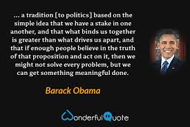

The Role of Politics
Politics is the backbone of any society, and in Pakistan, it significantly influences social, economic, and cultural development. Effective political leadership ensures that the government can address the needs of its citizens and secure the nation's future. I believe in political responsibility to improve the living conditions of all Pakistanis, regardless of their background. Politics in Pakistan plays a vital role in shaping the nation's future and addressing its challenges. It serves as a platform for decision-making, governance, and public representation. Political institutions, such as the Parliament and provincial assemblies, create laws and policies to address socio-economic issues, promote justice, and ensure the country’s progress. However, Pakistan’s political landscape has been marked by instability, corruption, and power struggles, which have hindered development and eroded public trust. Military interventions and frequent changes in leadership have disrupted democratic continuity. Despite these challenges, political engagement remains crucial for resolving key issues such as economic reform, education, and healthcare. Active participation of citizens, a free media, and an independent judiciary are essential for strengthening democracy and accountability. By fostering transparent and inclusive governance, Pakistan’s political system can pave the way for sustainable development and national unity.
The Role of Pakistan Politicians in our Politics
Pakistan's politicians play a crucial role in shaping the nation's governance, policies, and development. As representatives of the people, they hold the responsibility of addressing national challenges, creating laws, and ensuring that the needs of citizens are met. Their contributions influence various sectors, including education, healthcare, infrastructure, and economic growth. Through political institutions such as the Parliament and provincial assemblies, politicians provide a platform for debate and decision-making to foster progress and stability. However, Pakistan's political landscape has often faced issues of corruption, mismanagement, and political polarization. These challenges have undermined public trust in politicians and delayed the resolution of critical problems. Power struggles between political parties and frequent interruptions of democratic processes, such as military takeovers, have also hindered the nation's development. Politicians have sometimes focused more on personal gains and party interests rather than public welfare, which has exacerbated socio-economic disparities. Despite these challenges, politicians remain central to Pakistan's democratic framework. Strong leadership, transparency, and accountability can help rebuild trust and guide the nation toward sustainable growth. By prioritizing merit, inclusivity, and long-term planning, Pakistani politicians can address pressing issues such as poverty, unemployment, and governance reforms. In conclusion, the role of Pakistan's politicians is pivotal. They have the power to unite the nation, bridge divides, and work toward a prosperous future. Active public participation and demand for accountability are essential to ensure that politicians fulfill their responsibilities effectively and lead the country toward progress and stability.